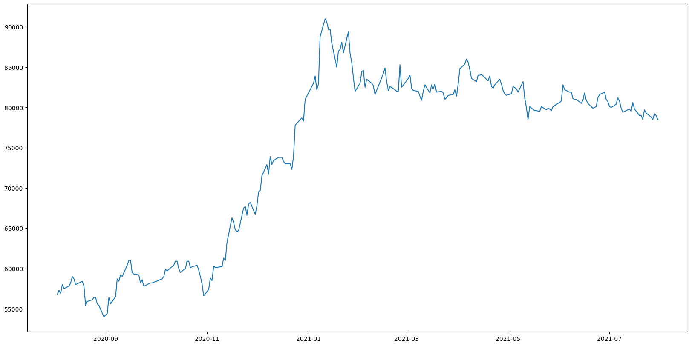
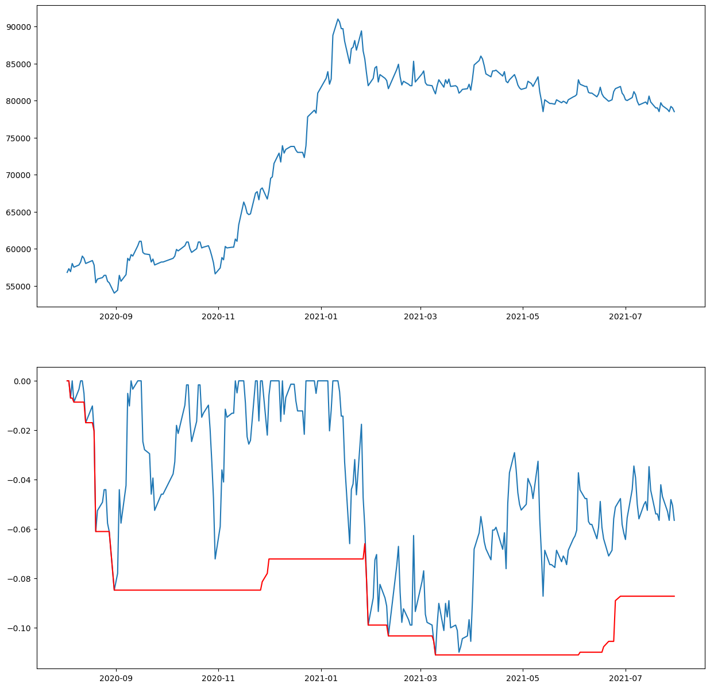
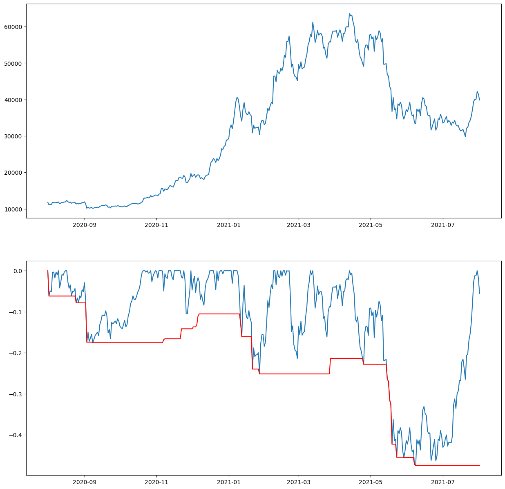

최대 손실 낙폭 📉¶
coredotfinance를 통해서 최대 손실 낙폭 즉, MDD를 구해보자
MDD = (최저점 - 최고점) / 최고점
MDD란 특정 기간 동안 얼마큼의 최대 손실이 날 수 있는지를 나타낸다.
퀀트 투자에서는 수익률을 높이는 것보다 MDD를 낮추는 것이 더 낫다로 할 만큼 중요한 지표다.
비트코인의 최대 손실 낙폭과 삼성전자의 최대 손실 낙폭을 비교해보자
삼성전자의 최대 손실 낙폭¶
[1]:
from coredotfinance.data import KrxReader
krx = KrxReader()
data = krx.read('005930', start='2020-08-01', end='2021-08-01', reverse=True)
data
삼성전자
[1]:
| close | change | change_ratio | open | high | low | volume | trading_value | market_cap | shares_outstanding | |
|---|---|---|---|---|---|---|---|---|---|---|
| 2020-08-03 | 56800 | -1100 | -1.90 | 57800 | 57900 | 56700 | 21158940 | 1209657414100 | 339083648840000 | 5969782550 |
| 2020-08-04 | 57300 | 500 | 0.88 | 57200 | 58100 | 57000 | 19419694 | 1115746295800 | 342068540115000 | 5969782550 |
| 2020-08-05 | 56900 | -400 | -0.70 | 57300 | 57500 | 56300 | 17739706 | 1007826798950 | 339680627095000 | 5969782550 |
| 2020-08-06 | 58000 | 1100 | 1.93 | 57100 | 58400 | 57100 | 21625874 | 1250813614044 | 346247387900000 | 5969782550 |
| 2020-08-07 | 57500 | -500 | -0.86 | 57900 | 58400 | 57100 | 18751717 | 1081791206100 | 343262496625000 | 5969782550 |
| ... | ... | ... | ... | ... | ... | ... | ... | ... | ... | ... |
| 2021-07-26 | 78800 | -500 | -0.63 | 79400 | 79500 | 78800 | 10040975 | 792954940200 | 470418864940000 | 5969782550 |
| 2021-07-27 | 78500 | -300 | -0.38 | 79200 | 79400 | 78500 | 11427693 | 900948843000 | 468627930175000 | 5969782550 |
| 2021-07-28 | 79200 | 700 | 0.89 | 78300 | 79200 | 78100 | 12743417 | 1000757015703 | 472806777960000 | 5969782550 |
| 2021-07-29 | 79000 | -200 | -0.25 | 78800 | 79400 | 78800 | 14360453 | 1134761032300 | 471612821450000 | 5969782550 |
| 2021-07-30 | 78500 | -500 | -0.63 | 78900 | 78900 | 78500 | 13823411 | 1086488907610 | 468627930175000 | 5969782550 |
247 rows × 10 columns
삼성전자의 1년간 종가 그래프¶
[11]:
import matplotlib.pyplot as plt
plt.figure(figsize=(20,10))
plt.plot(data.index, data['close'])
print(f'\
최대값: {max(data["close"])}\n\
최솟값 : {min(data["close"])}')
plt.show()
최대값: 91000
최솟값 : 54000

MDD¶
여기서는 기준일을 60일로 정한다. 즉, 60일 동안의 최고점과 최저점으로 계산을 해서 MDD를 나타낸다.
[12]:
days = 60
peak = data['close'].rolling(days, min_periods=1).max() #60일 중 최고값
dd = data['close']/peak - 1.0
max_dd = dd.rolling(days, min_periods=1).min() # 60일 중 최저값 == 60일 중 최대 낙폭비율
[13]:
plt.figure(figsize=(15,15))
plt.subplot(211)
plt.plot(data['close'])
plt.subplot(212)
plt.plot(dd)
plt.plot(max_dd, c='r')
plt.show()

변동성이 큰 주식인 만큼 MDD 값 또한 크게 나온다.
MDD 가 0.0에 닿았다는 뜻은 설정한 기준일(60일) 중 최고가를 달성했다는 뜻이다.
반대로 MDD가 -1.0 값에 가깝다는 것은 그만큼 주가가 하락했다는 뜻이다.
비트코인의 최대 손실 낙폭¶
[14]:
from coredotfinance.data import BinanceReader
binance = BinanceReader()
data = binance.read('BTCUSDT', start='2020-08-01', end='2021-08-01', interval='1d', reverse=True)
days = 60
peak = data['close'].rolling(days, min_periods=1).max() #60일 중 최고값
dd = data['close']/peak - 1.0
max_dd = dd.rolling(days, min_periods=1).min() # 60일 중 최저값 == 60일 중 최대 낙폭비율
plt.figure(figsize=(15,15))
plt.subplot(211)
plt.plot(data['close'])
plt.subplot(212)
plt.plot(dd)
plt.plot(max_dd, c='r')
plt.show()
BTCUSDT

MDD가 -0.4라는 의미는 기준일(60일) 최고가 대비 40%까지 떨어졌다는 뜻이다.
최고가가 100원이었던 주식이 60원이 되었다는 의미다.
비트코인이 가파른 상승을 했지만 자산이 기본적으로 가진 변동성과 낙폭 정도는 꽤나 크다.